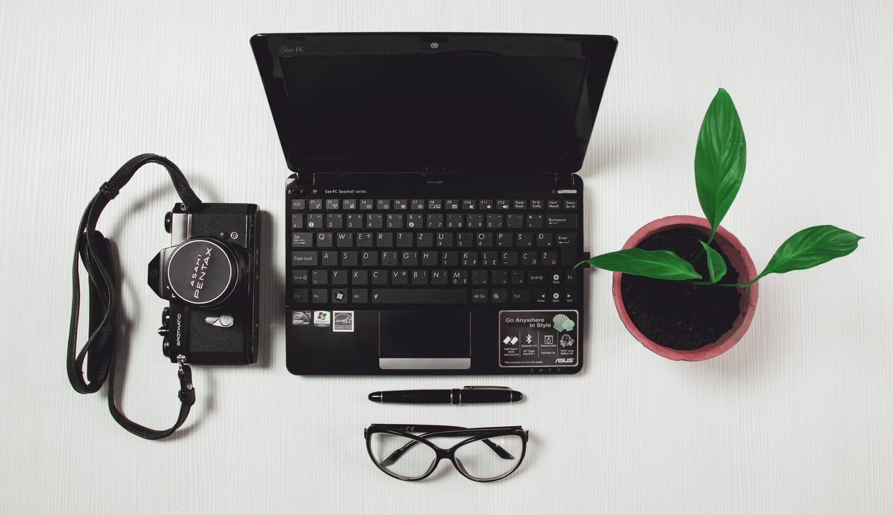
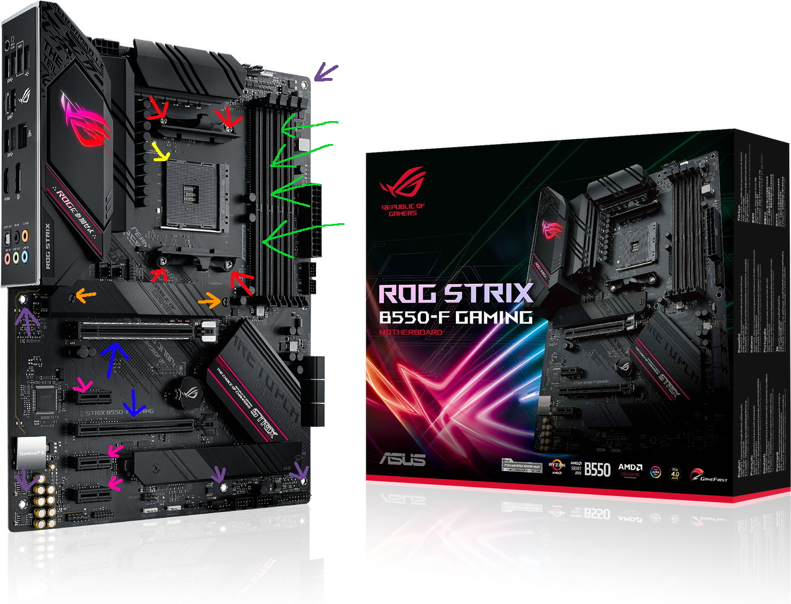
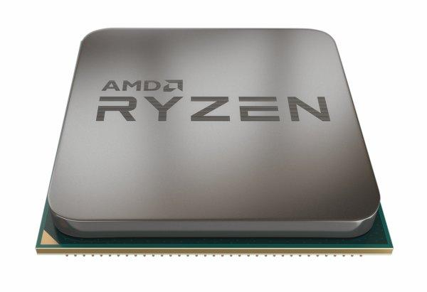
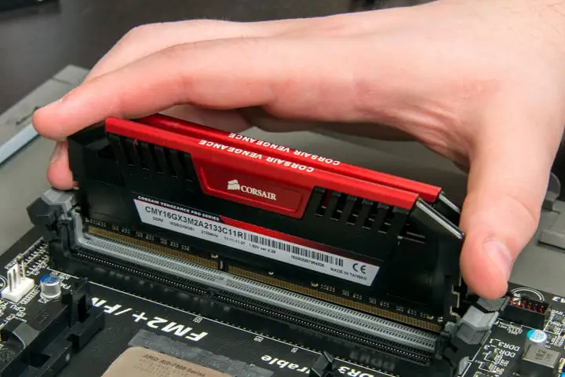
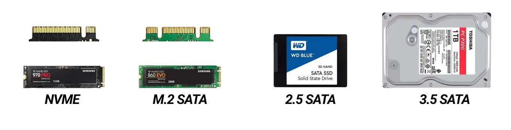
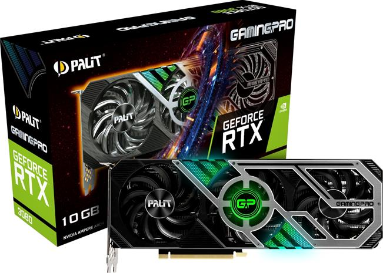
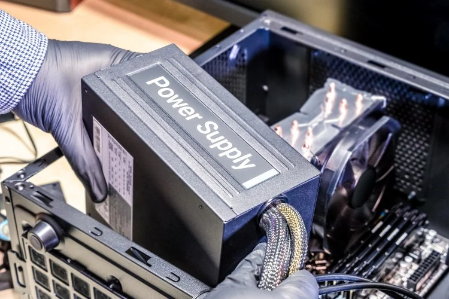
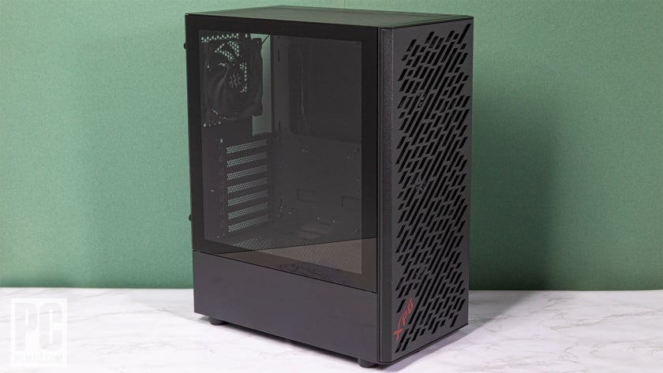

Tietokoneet ovat tärkeitä nykyajan maailmassa, suurin osa töistä vaatii jonkun näköistä tietokonetta niin tällä sivustolla kerron kuinka voit rakentaa oman tietokoneesi mutta ennen kuin
aloitat tietokoneen kasaamista sinun tulee miettiä omaa budjettia ja mitä tarkoutusta varten kyseinen tietokone on.
Jos tietokone on työtä varten esim vain esim. sähköpostien lähettämiseen niin et todennäköisesti tarvitse pöytätietokonetta vaan olisi parempi valita vain läppäri.
Jos tietokone on isojen tiedostojen käsittelyyn niin haluat panostaa muistiin ja processoriin koska ne nopeuttavat sitä prosessia.
Jos pelaaminen on mielessä niin kannattaa panostaa prosessoriin ja näytönohjaimeen koska ne lisää eniten suorituskykyä, muistilla ei ole niin paljon väliä pelaamisessa(suurimmassa osassa)
et tarvia enempää kuin 16gb muistia suurimpaan osaan peleistä.
Sivupalkissa on näppäimet joita painamalla pääset katsomaan mitä mitäkin osa tekee!

Emolevy on tietokoneen ydin/sydän. Emolevyyn laitetaan kaikki komponentit kiinni ja komponentit keskustelevat keskenään sen kautta.
Emolevy ei paljoa(vielä) vaikuta suorituskykyyn joten emolevy on osa mistä kannattaa säästää jos on tiukalla budjetilla.
Emolevyssä yleensä maksetaan ulkonäöstä ja sen extra toiminnoista kuten esim. nopeat ethernet portit, sisään rakennetut langattaman verkon käsittely laitteet ja BIOS-flashback joka
mahdollistaa biossin päivittämisen nopeasti ja helposti.
Kaikki emolevyt ei näytä tältä, tämä on vain esimerkki tähän sivulle.
Violetteihin nuoliin menee ruuvi joka menee koppaan kiinni, että emolevy pysyy paikallaan, mutta ennen kuin laitat emolevyn koppaan kiinni
niin haluat laittaa kaikki muut komponentit kiinni paitsi näytönohjaimen.
Punaiset nuolet osoittavat ruuveihin mitkä otat pois ennen kuin voit laittaa prosessorin emolevyyn. Muista säilyttää nuo muovi hommat mitkä lähtee irti kun otat ruuvit pois.
Oranssit nuolet osoittaa ruuveja jotka joudut ottamaan pois jos hakuat asentaa m.2 ssd:n emolevyysi. kun/jos asensit m.2 ssd:n niin laita ruuvit ja työ mettalinen osa takaisin kiinni emolevyyn.
Siniset nuolet osoittavat kohtiin mihin voit asentaa näytönohjaimet/näytönohjaimen.
Pinkit nuolet osoittavat kohtiin mihin voi asentaa lisä kortteja, mutta kannattaa ottaa huomioon jos laittaa lisä kortin että näytön ohjain voi saada huonommin ilmaa.
Keltainen nuoli osoittaa kohtaa missä on semmoinen kolmio joka auttaa prosessorin asentamisessa.

ennen kuin teet mitään prosessorille niin avaa vipu joka on "slotin" vieressä. Keltainen nuoli osoittaa prosessori "slotin" kulmaan. Jossain niistä on kolmio niin haluat yhdissää kuvassa olevan kolmion prosessorin kulmassa "slotin" kulmaan. (kuva alempana) ja sitten vipu kiinni ja sitten olet jo varmaan ottanut punaisten nuolien osoittavat ruuvit pois. sitten laitat prossu laatikossa tulleen tuulettimen sillain että kaikki 4 tuulettimen ruuvia menee niihin kohtiin ja ruuvaa kiinni. ja noin sinulla on prosessori asennettu. 
Vihreät nuolet osoittavat ram:in "slotteihin" aluksi avaat "nupit" "slottien" päädyssä sitten laitan tikut kuvan mukaisesti(kuva alhaalla) ja sitten kun ne mukavasti sisällä niin "nupit" kiinni. noin sinulla on ram:it asennettu! 
NVME ja m.2 SATA on nopeimmat mutta myös kalleimmat.
2.5 SATA on hyvä keski verto nopeimmista ssd:stä ja tilan suhteen eikä ne ole edes kovin kalliita.
3.5 SATA eli kova levy on aika hidas mutta niihin mahtuu yleesä tosi paljon suosittelen kovalevyä jos aijot pitää paljon tiedostoja. ja ne on tosi halpoja

näytönohjaimet ovat aika usein koneen kallein osa tietokonetta mutta myös yksi tärkeimmistä osista
koska ilman näytönohjainta et saa kuvaa ruudulle.
asennat näytönohjaimen vain laittamalla sen emolevyssä olevaan "slottiin" joka on merkitty esim emolevy sivulla.
jos se ei mene sisään niin näytönohjaimen "connectorissa" on varmaan vielä muovinen suoja. ota se pois ja koita uudestaan

Virtalähteellä ei itsessään suorituskykyyn ole vaikutusta mutta jos on liian vähän virtaa niin kone ei toimi. suosittelen vähintään 650w mutta 850w on parempi yleisesti kun jää peli varaa. mutta kannattaa aina katsoa netistä ainakin näytönohjaimen ja prosessorin virran kulutuksen ja lisätä 200w päälle niin on pelivaraa. 
Kopalla ei paljon väliä suorituskykyyn ole mutta yleesä mitä enemmän maksaa niin saa paremman rakennus kokemuksen ja paremman näköisen kopan. mutta itse en suosittele käyttämään koppaan enemmän kuin max100€ riippuu budjetista aika paljon koppa on se mistä kannattaa aina säästää jos on tiukka budjetti. 